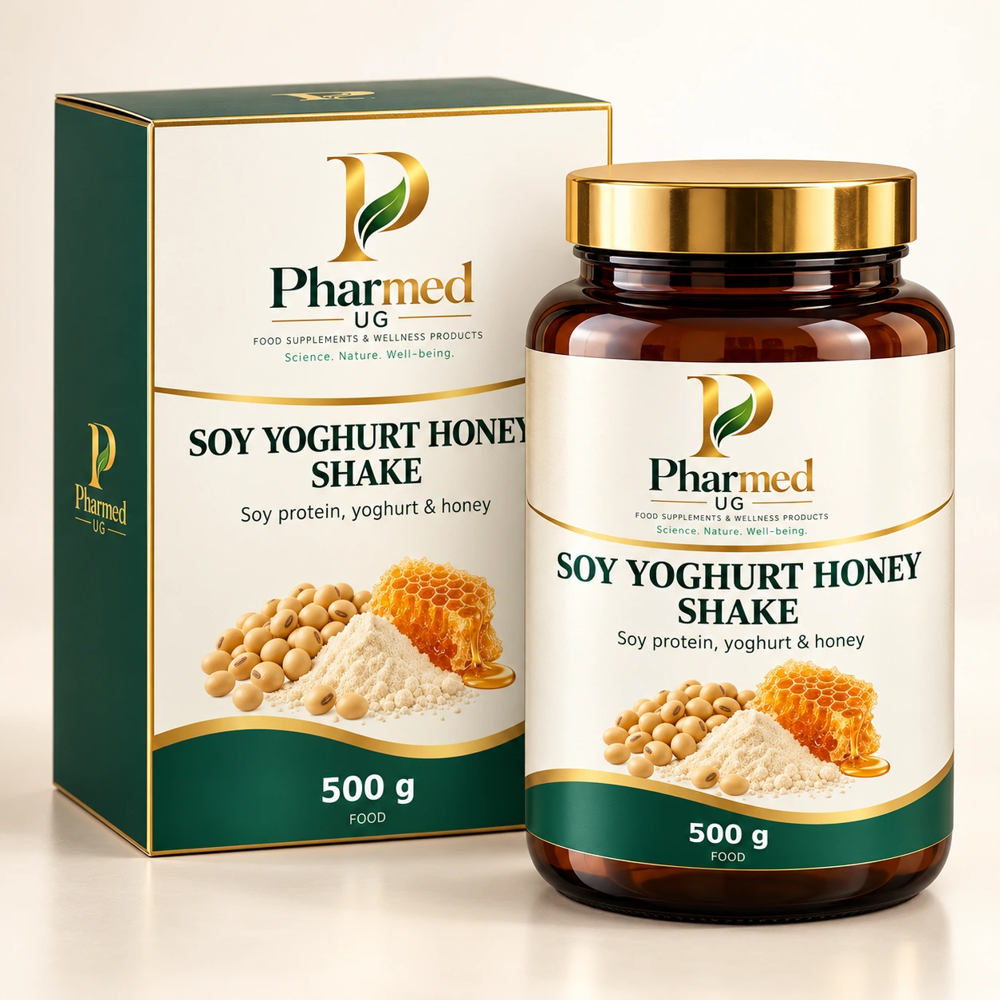
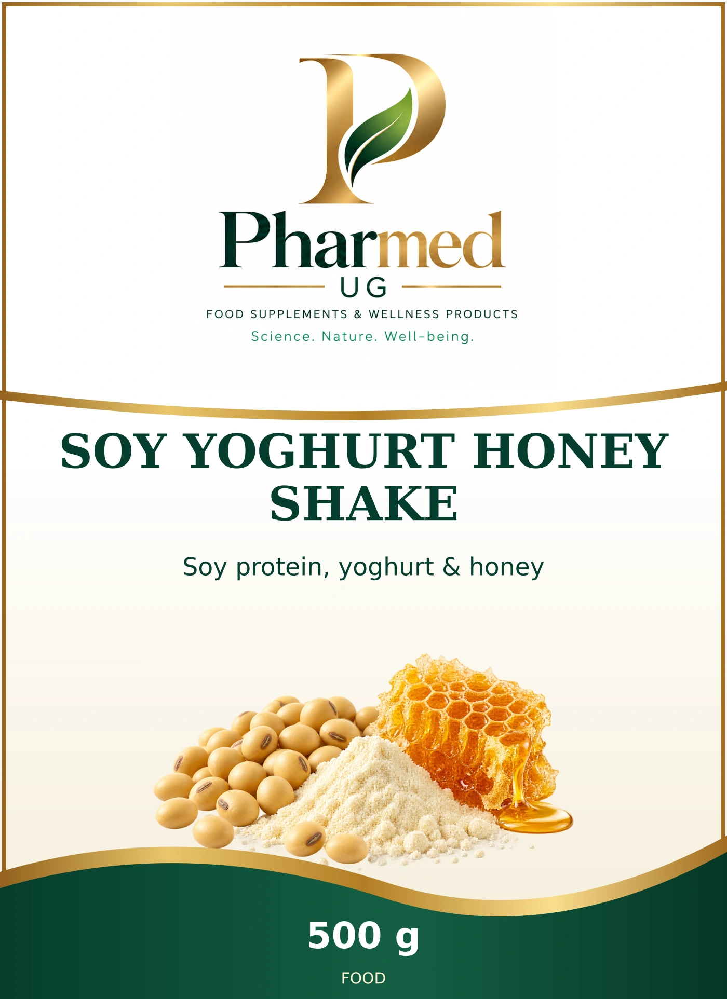

SOY YOGHURT HONEY SHAKE
Soy protein, yoghurt & honey
Soy protein, yoghurt & honey. PHARMED development profile based on the published source declaration.
Complete selected ingredient declaration
SOY protein 49% (contains SOY lecithins), honey25% (honey enzyme activity100U/kg), skimmed MILK yoghurt powder23%, potassium chloride, calcium citrate, magnesium carbonate, magnesium citrate, silica, vitamin C, ferrous fumarate, riboflavins (colour), niacin, vitamin E, zinc oxide, manganese sulphate, calcium D-pantothenate, vitamin B2, vitamin D3, vitamin B6, vitamin B1, vitamin A, folic acid, potassium iodide, vitamin K, sodium selenite, biotin, vitamin B12.
Published component amounts
| Component | Amount | Exact table basis |
|---|---|---|
| Energy | 1475 kJ | 100g powder |
| Energy | 347 kcal | 100g powder |
| Fat | 1.8 g | 100g powder |
| Saturates | 0.5 g | 100g powder |
| Carbohydrate | 29.1 g | 100g powder |
| Sugars | 29.1 g | 100g powder |
| Protein | 52.2 g | 100g powder |
| Salt | 1.38 g | 100g powder |
| Vitamin A | 467 µg | 100g powder |
| Vitamin D3 | 3.16 µg | 100g powder |
| Vitamin E | 5.3 mg | 100g powder |
| Vitamin K | 31.7 µg | 100g powder |
| Vitamin C | 53.1 mg | 100g powder |
| Thiamin | 0.7 mg | 100g powder |
| Riboflavin | 1.1 mg | 100g powder |
| Niacin | 11.9 mg | 100g powder |
| Vitamin B6 | 1 mg | 100g powder |
| Folic acid | 157 µg | 100g powder |
| Vitamin B12 | 1.7 µg | 100g powder |
| Biotin | 40 µg | 100g powder |
| Pantothenic acid | 4.1 mg | 100g powder |
| Potassium | 1039 mg | 100g powder |
| Calcium | 484 mg | 100g powder |
| Phosphorus | 555 mg | 100g powder |
| Magnesium | 237 mg | 100g powder |
| Iron | 10.8 mg | 100g powder |
| Zinc | 6.6 mg | 100g powder |
| Copper | 0.7 mg | 100g powder |
| Manganese | 1.4 mg | 100g powder |
| Selenium | 38 µg | 100g powder |
| Iodine | 100 µg | 100g powder |
| Energy | 959 kJ | prepared portion:50g powder+200mL water+6g rapeseed oil |
| Energy | 228 kcal | prepared portion:50g powder+200mL water+6g rapeseed oil |
| Fat | 6.9 g | prepared portion:50g powder+200mL water+6g rapeseed oil |
| Saturates | 0.7 g | prepared portion:50g powder+200mL water+6g rapeseed oil |
| Carbohydrate | 14.6 g | prepared portion:50g powder+200mL water+6g rapeseed oil |
| Sugars | 14.6 g | prepared portion:50g powder+200mL water+6g rapeseed oil |
| Protein | 26.1 g | prepared portion:50g powder+200mL water+6g rapeseed oil |
| Salt | 0.69 g | prepared portion:50g powder+200mL water+6g rapeseed oil |
| Vitamin A | 266 µg | prepared portion:50g powder+200mL water+6g rapeseed oil |
| Vitamin D3 | 1.6 µg | prepared portion:50g powder+200mL water+6g rapeseed oil |
| Vitamin E | 4 mg | prepared portion:50g powder+200mL water+6g rapeseed oil |
| Vitamin K | 24.9 µg | prepared portion:50g powder+200mL water+6g rapeseed oil |
| Vitamin C | 26.5 mg | prepared portion:50g powder+200mL water+6g rapeseed oil |
| Thiamin | 0.4 mg | prepared portion:50g powder+200mL water+6g rapeseed oil |
| Riboflavin | 0.5 mg | prepared portion:50g powder+200mL water+6g rapeseed oil |
| Niacin | 6 mg | prepared portion:50g powder+200mL water+6g rapeseed oil |
| Vitamin B6 | 0.5 mg | prepared portion:50g powder+200mL water+6g rapeseed oil |
| Folic acid | 79 µg | prepared portion:50g powder+200mL water+6g rapeseed oil |
| Vitamin B12 | 0.8 µg | prepared portion:50g powder+200mL water+6g rapeseed oil |
| Biotin | 20 µg | prepared portion:50g powder+200mL water+6g rapeseed oil |
| Pantothenic acid | 2.1 mg | prepared portion:50g powder+200mL water+6g rapeseed oil |
| Potassium | 519 mg | prepared portion:50g powder+200mL water+6g rapeseed oil |
| Calcium | 242 mg | prepared portion:50g powder+200mL water+6g rapeseed oil |
| Phosphorus | 277 mg | prepared portion:50g powder+200mL water+6g rapeseed oil |
| Magnesium | 118 mg | prepared portion:50g powder+200mL water+6g rapeseed oil |
| Iron | 5.4 mg | prepared portion:50g powder+200mL water+6g rapeseed oil |
| Zinc | 3.3 mg | prepared portion:50g powder+200mL water+6g rapeseed oil |
| Copper | 0.4 mg | prepared portion:50g powder+200mL water+6g rapeseed oil |
| Manganese | 0.7 mg | prepared portion:50g powder+200mL water+6g rapeseed oil |
| Selenium | 19 µg | prepared portion:50g powder+200mL water+6g rapeseed oil |
| Iodine | 50 µg | prepared portion:50g powder+200mL water+6g rapeseed oil |
| L-Tyrosine | 3.7 g | 100g protein; NOT100g powder |
| L-Methionine | 1.5 g | 100g protein; NOT100g powder |
| L-Cystine/cysteine | 1.1 g | 100g protein; NOT100g powder |
| L-Lysine | 6.3 g | 100g protein; NOT100g powder |
| L-Threonine | 3.7 g | 100g protein; NOT100g powder |
| L-Tryptophan | 1.4 g | 100g protein; NOT100g powder |
| L-Leucine | 8.4 g | 100g protein; NOT100g powder |
| L-Isoleucine | 5.2 g | 100g protein; NOT100g powder |
| L-Valine | 5.3 g | 100g protein; NOT100g powder |
| L-Histidine | 2.6 g | 100g protein; NOT100g powder |
| L-Arginine | 6.8 g | 100g protein; NOT100g powder |
| L-Phenylalanine | 5.1 g | 100g protein; NOT100g powder |
| L-Aspartic acid + asparagine | 10.9 g | 100g protein; NOT100g powder |
| L-Serine | 4.9 g | 100g protein; NOT100g powder |
| L-Glutamic acid + glutamine | 19.1 g | 100g protein; NOT100g powder |
| L-Proline | 6 g | 100g protein; NOT100g powder |
| L-Glycine | 3.8 g | 100g protein; NOT100g powder |
| L-Alanine | 4.2 g | 100g protein; NOT100g powder |
| Soy protein | 49 % | powder mass |
| Honey | 25 % | powder mass |
| Skimmed milk yoghurt powder | 23 % | powder mass |
Each row retains its source basis. Amounts per tablet, daily portion, 100 g, 100 mL and prepared serving are distinct. “Not published” means undisclosed, not zero. Raw-material input masses and processing allowances require the manufacturer specification.
Reference directions & product information
Prepare50g powder with200mL water and6g rapeseed oil; source meal-replacement instructions replace one or two meals within an energy-restricted diet.
Reference formulation for private-label development; the final PHARMED directions follow the validated manufacturer specification.

The shared label design
This is the exact front artwork used in the catalogue and measured factory artwork. The three-dimensional packaging image illustrates its presentation.
Open the master front